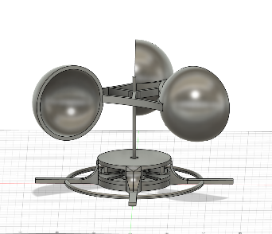
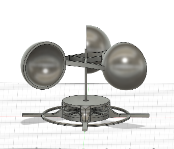
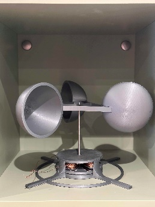

wind turbine
This was my second time using Fusion360, and I will say it was a big improvement from before. I set out to
make a vertical wind turbine connected to a generator to produce an electrical current. It had to be small
and able to come apart to transport. I wanted the energy generated to power an LED for a simple way to
show that it works. My main resource for construction would be 3D printing with PLA. Although I have
learned basic electromagnetism in Advanced Higher Physics, I had a very limited understanding of how to
create a motor or generator so I researched by watching a lot of videos and reading articles.
After recently learning skills in Fusion360, I used that to create a design for the generator. Six
rotating neodymium magnets with a stationary copper coil around them. The print would be in four parts to
not use supports: the main component for the magnet rotor, the cap for the magnet rotor, and two halves
for the coil. The magnets would be placed in each slot with alternating poles. A five-millimetre hole was
through the rotor for the axle, and an eleven-millimetre hole was through the copper for the two bearings.
I created a sketch on Fusion360 with the circular pattern function.
Unfortunately, I ran into a problem where one of the magnets shattered into two pieces which resulted in a
redesign with four magnet slots instead.
Unfortunately, after assembly, it did not work. This was just my first attempt, though. I packed it up and
learned from it.
This design did not work after testing with a multimeter and a drill, but I learned from my mistakes. It
produced very little power when it did work. My reasoning for this was that the distance between the
magnet and the coil was too great and they needed to be closer to generate energy. I think a higher number
of turns in the coil is needed for everything to be cleaner and tighter, as there is a reasonable amount
of friction. It wouldn't have been easy to turn with just wind, so I would need a gear ratio for more
torque, but then it wouldn't move fast enough to produce anything. I started again with some more
knowledge than before and researched some more.
Creating another design. This time with eight half-sized magnets and four coils, they were much closer
together with one millimetre between them, and the coils were much tighter. I then printed out each piece
and made a few extra buffer parts to make sure everything sat right with minimal friction. I superglued
all the parts together. It worked on the same idea of having the magnets rotate while the copper wire was
stationary, generating AC current.
Testing it gave 50 mV, which was significantly more than the last one. Though not enough to power an LED
of around 1.8V, it is still generating energy. This was turning it by hand at a reasonable speed. In the
actual wind turbine, I intend to have a gear ratio that would increase the angular velocity
considerably.
Next was creating the windmill. I opted for a vertical design as I found it was more unique and
interesting than a horizontal windmill. I used Fusion360 again to design it. I went for a simple design of
three semi-spheres attached to a centre axle. It would be printed in 4 separate parts. The semi-spheres
have a slot where the centre body would fit in and then be superglued.
The air would flow around the back of the semi-spheres and be caught on the other side, creating rotation.
The hole in the centre of the windmill is a 5mm diameter and is where a steel axle is placed. Each
semi-sphere took nearly nine hours of printing. I used minimal supports on the interior, though it would
take 73% fewer supports to have it on the exterior, the exterior being smooth is more valuable than the
interior, as it is just used to catch the air and not flow around it. The supports will leave a rough
surface even with aggressive sanding, as the printed filament is not as densely packed as it were without
supports. The infill on the rest of the wind turbine was 15% for rigidity but for the spheres it was
lowered to 5% and the centre to 10%. The lighter the wind turbine is the easier it will be to rotate. The
centre was at a higher infill because of the already thin design of it to minimise weight.
I used an old design of a cover that didn't fully work as the design was faulty. The windmill part worked
fantastically with little friction; testing outside, it only moved in one direction as planned, and air
blew right around the back of each semi-sphere. I then started to design a new cover that would be more
open, wouldn�t touch the rotating part, and would have a large, stable base so the force of the wind
wouldn�t tip it. I also wanted it to have lots of areas to attach zip-ties to anything.
I created this design on Fusion360; the hole in the centre is 11 mm in diameter for a bearing to sit in,
and the two inner rings around the centre are for the rotor to balance off of but not touch most of the
time. The four surrounding stabilisers are to hold the coils of wire in place, as the extruding wires will
not be able to pass the stabilisers. Then there are two outer rings with the four legs; these were to
stabilise the whole thing, and as there are lots of holes, you can use the zip-ties on any part.
 


I constructed the whole thing and tested it. It only gave 0.02V when hand spinning. I was quite
disappointed, so I looked into each part. The problem is that the copper wire coiled in the middle was not
enamelled like I previously thought. Effectively, the current would short across the coil and not keep the
current inside the turns of the wire, so there were no turns of the wire. The turns of the wire in this
are very crucial. Re-coiled the centre with thinner enamelled wire, 0.40mm, compared to the previous
0.8mm. Each coil had approximately 200 turns of wire instead of 50. Testing this gave 2.1V, significantly
more than before, and it still works outside with normal winds.
The next step was to create a full bridge rectifier to turn the alternating current into direct current so
that it could be used for an LED. An alternating current graph of voltage against time would look like
this.
Just using a diode to only allow the current to travel one way would give you a pulsating graph where it
is only producing a voltage half of the time. Using a full bridge rectifier would allow the current to
travel in one direction all the time. Producing a graph like this.
Just using a diode to only allow the current to travel one way would give you a pulsating graph where it
is only producing a voltage half of the time. Using a full bridge rectifier would allow the current to
travel in one direction all the time. Producing a graph like this.

Then a capacitor can be inserted to “smooth” out the voltage, so it is a direct current. I made sure to
create a circuit diagram before soldering.
The LED will then turn on whenever the switch is closed as the capacitor is then discharged through the
LED with a bright flash and a slow dim.
I tested with a variety of capacitors and found the best ones to work for me. Then of course the wires
would be hanging form the turbine and not very pretty. So, I designed a casing for the electric components
that would fit onto the stand of the turbine.

This fit snuggly onto the stand and had a small divot for the enamelled wire to enter. The lid for the
case took a few attempts as it has to fit the LED and switch so they wouldn't move. I opted on small
divots for the LED and switch so they can be glued in close to the surface, and on the
top, it has a design inspired by the infill of all the prints so far.
As I had to make sure everything could be taken apart into their individual pieces, after lots of stress
testing, the wind catcher started slipping down the steel axle. So I printed a small attachment to stop
the axle from going through the top.
This was the final part.
The whole process showed me how much effort is put into each very simple component. The final product is a
very simple design that is very easy to assemble and disassemble. It was a very fun build despite the
problems, and I am very happy with the end result.